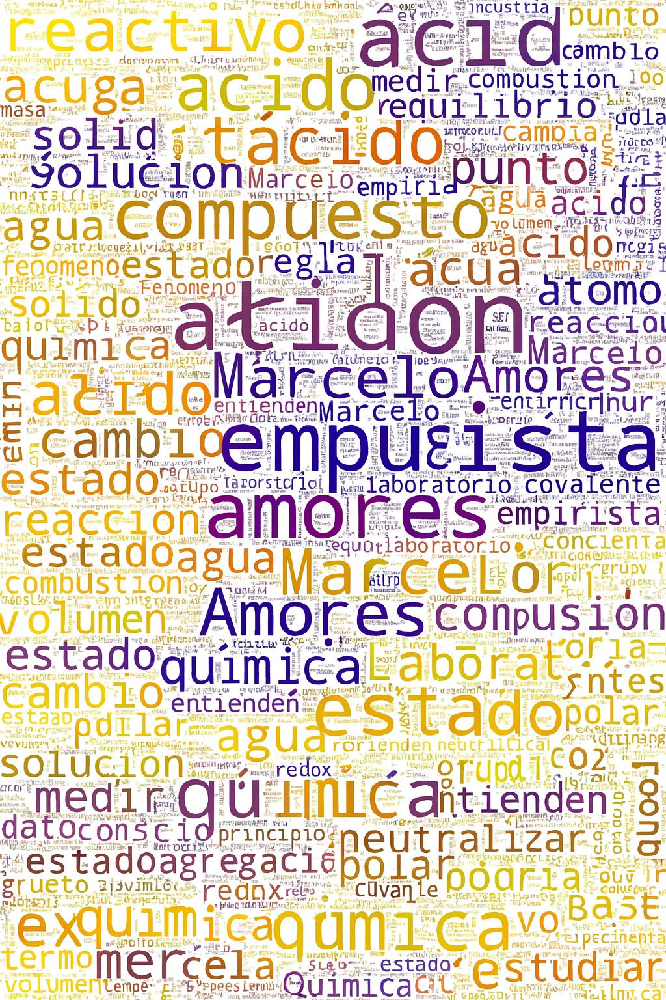

| 2020–Presente | 20K Observaciones de vida silvestre, incluyendo posibles especies no descritas por la ciencia. Oservador. iNaturalist, GBIF, Symbiota INABIO |
| 2020–Presente | 20K Identificacionesciones de vida silvestre. Identificador. iNaturalist, GBIF |
| 2021–Presente | Proyecto: Páramos Ecuador. Creador, administrador. iNaturalist |
| 2021–Presente | Proyecto: Las peores especies invasoras del mundo. Creador, administrador. iNaturalist |
| 2021–Presente | Proyecto: Registro audiovisual de vida silvestre. Observador, Editor. iNaturalist, YouTube |
| 2022–Presente | Gan Bioblitz del Sur, Cotopaxi Ecuador 2022, 2023 & 2024. Organizador local. iNaturalist |
| 2023–Presente | Adaptación web de contenido didactico de ciencias exactas y naturales. Desarrollador, Editor. ENVINATU, YouTube |
QUÍMICA 2025-2026-2027
ENVINATU EDUCACIÓN
Sitio web interactivo de Química para Bachillerato General Unificado (BGU). Ecuador 2025-2026-2027
Presentación

La presente obra, desarrollada por Marcelo Amores Palma, constituye un esfuerzo integrador por contribuir en el fortalecimiento de la calidad y eficiencia del proceso de enseñanza-aprendizaje mediente la recopilación, estructuración y comunicación rigurosa y accesible los fundamentos clave de las ciencias naturales y las ciencias exactas. Se hace énfasis en la aplicación y reproducibilidad de la ciencia a traves de entornos modernos de programación. Su objetivo principal es promover la alfabetización científica mediante una propuesta pedagógica que articula contenidos fundamentales con un enfoque didáctico y transversal, mediado por las TICs.
El trabajo ha sido desarrollado utilizando lenguajes de escritura y programación como R, Python, LaTeX y Markdown. Esta infraestructura técnica, basada en tecnologías científicas abiertas, permite garantizar la reproducibilidad de los contenidos, la rigurosidad metodológica y la transparencia en el desarrollo de materiales, alineándose con los principios contemporáneos de la ciencia abierta y colaborativa.
La obra ofrece salidas multiplataforma en formatos HTML interactivo, EPUB, PDF, audio narrado y video, lo que facilita su uso en distintos entornos de aprendizaje y promueve una comunicación científica inclusiva y accesible. Cada sección ha sido diseñada para facilitar la comprensión conceptual a través de visualizaciones, ejemplos contextualizados y recursos multimedia, fortaleciendo el pensamiento crítico y las competencias científicas fundamentales.
Este proyecto de divulgación se sustenta en el compromiso con una educación científica abierta, interdisciplinaria y basada en evidencias, dirigida a estudiantes, docentes y a toda persona interesada en el conocimiento científico como herramienta para la comprensión del mundo y la toma de decisiones fundamentadas.
Sobre Marcelo Amores
Marcelo Amores es un profesional con una sólida trayectoria en los ámbitos ambiental, académico y científico. Es Magíster en Educación con mención en Pedagogía por la Universidad Tecnológica Empresarial de Guayaquil, donde se graduó con honores como el Mejor Graduado de la Facultad de Posgrado e Investigación, promoción 2024, con un promedio de 9.7. Es Ingeniero en Medio Ambiente por la Universidad Técnica de Cotopaxi, donde también obtuvo la más alta calificación de su promoción en 2019, con un promedio de 9.5.
A lo largo de su carrera, ha participado en diversos proyectos de investigación sobre recursos hídricos, liderando estudios relacionados con la calidad fisicoquímica y microbiológica del agua. Ha desempeñado un rol clave en la organización de eventos de ciencia ciudadana, promoviendo la participación comunitaria en la conservación del medio ambiente.
Desde 2022, es curador en la plataforma iNaturalist, donde gestiona problemas taxonómicos, modera la plataforma y desarrolla proyectos enfocados en biodiversidad y calidad ambiental. Desde 2023, ejerce como Asesor Académico en Servicios Integrales de Tesis S.A., brindando acompañamiento y capacitación en el desarrollo de proyectos de investigación a nivel de pregrado y posgrado. Su experiencia también incluye roles previos como Técnico Ambiental y Supervisor de levantamiento de información estadística.
Marcelo complementa su labor con el registro y conservación de la biodiversidad Andina, combinando metodologías científicas con el uso de software R, Quarto, Markdown y LaTeX para el procesamiento y visualización de datos ambientales. Su enfoque interdisciplinario y su compromiso con la sostenibilidad lo han consolidado como un referente en su campo.
Portafolio
Skills
| Lenguajes | R, python, JavaScript, html, css |
| Composición tipográfica | LaTeX, markdown, quarto |
| Sistemas de Información Geográfica | QGIS, ArcGIS, Google Earth Engine |
| Producción multimedia | Premiere, Photoshop, Illustrator, Lightroom, Audition |
Instrucción Formal
| 2024 | Magíster en Educación, mención en Pedagogía. Universidad Tecnológica Empresarial de Guayaquil. Guayaquil, EC. Honores: Mejor graduado, ago. 2024. Promedio: 9.7 |
| 2019 | Ingeniero en Medio Ambiente. Universidad Técnica de Cotopaxi. Latacunga, EC. Honores: Mejor Graduado, jul. 2019. Promedio: 9.5 |
Experiencia profesional
| 2019–Presente (6 años) | Profesional independiente. ENVINATU. Latacunga, EC - Híbrido. Asistencia en proyectos de investigación de recursos hídricos. Observación, registro, identificación y divulgación científica de flora y fauna. Elaboración de contenido didáctico de ciencias naturales y exactas |
| 2022–Presente (3 años) | Curador. iNaturalist. Latacunga, EC - On-line. Resolución de problemas taxonómicos. Moderación del sitio. Revisión de nombres comunes utilizados en Ecuador |
| 2023–Presente (2 años) | Asesor académico. Servicios Integrales de Tesis S.A. Latacunga, EC - On-line. Asesoría Académica a nivel de pregrado y posgrado, en el campo de la ingeniería ambiental |
| 2022 (2 meses) | Supervisor de Censistas. Instituto Nacional de Estadística y Censos. Latacunga, EC - On-site. Supervisión de levantamiento de información en campo. Censo de Población y Vivienda |
| 2020 (4 meses) | Técnico. CAT & P Consultora. Latacunga, EC - On-line. Diagnóstico estratégico, propuesta y modelo de gestión de componentes Biofísico, Recursos Hídricos y Asentamientos Humanos. Actualización del PDOT de las parroquias Aláquez y Canchagua, Cotopaxi, Ecuador |
| 2019 (6 meses) | Tesista. EPMAPS - Agua de Quito. Quito, EC - On-site. Análisis de información hidrometeorológica, fisicoquímica y microbiológica de fuentes de captación de agua potable de Quito. Elaboración de informes técnicos de recursos hídricos. Manejo de bases de datos institucionales. Asistencia en procesoso de contratación pública |
| 2018 (2 meses) | Tesista. FONAG. Estación científica agua y páramos. Quito, EC - On-site. Análisis de información hidrometeorológica, fisicoquímica y microbiológica de fuentes de captación de agua potable de Quito. Elaboración de informes técnicos de recursos hídricos |
Premios y Reconocimientos
| 2024 | Mejor graduado de la Facultad de Posgrado e Investigación. Universidad Tecnológica Empresarial de Guayaquil. Guayaquil, EC |
| 2023 | Mayor número de identificaciones en la plataforma iNaturalistEC. Instituto Nacional de Biodiversidad INABIO. Distrito metropolitano de Quito, EC |
| 2023 | Mayor número de especies publicadas en la plataforma iNaturalistEC. Instituto Nacional de Biodiversidad INABIO. Distrito metropolitano de Quito, EC |
| 2021 | Beca para Diplomado en Salud y Seguridad Ocupacional. Alianza para el Emprendimiento y la Innovación AEI. Distrito metropolitano de Quito, EC |
| 2019 | Mejor graduado de la carrera de Ingeniería en Medio Ambiente. Universidad Técnica de Cotopaxi. Latacunga, EC |
| 2018 | Beca desarrollo de tesis de pregrado. Recursos hídricos. Estación científica Agua y páramos. EPMAPS, FONAG. Distrito metropolitano de Quito, EC |
| 2012 | Abanderado del Pabellón Nacional - Secundaria. Unidad Educativa Marco Aurelio Subía Martínez. Latacunga, EC |
| 2012 | Mejor estudiante de la asignatura inglés - Secundaria. Unidad Educativa Marco Aurelio Subía Martínez. Latacunga, EC |
| 2007 | Abanderado del Pabellón Nacional - Primaria. Escuela “Simón Rodríguez” Toacaso. Latacunga, EC |
Ponencias
| nov–2019 | Gestión de los Recursos Hídricos como estrategia de adaptación al cambio climático. Gobierno Autónomo Descentralizado de la Provincia de Cotopaxi, Universidad Técnica de Cotopaxi. Latacunga, EC |
| jul–2019 | I Jornada de Difusión de la Investigación Ambiental. Evaluación de la variación de la calidad del agua en alta del río Pita. Universidad Técnica de Cotopaxi, Carrera de Ingeniería Ambiental. Latacunga, EC |
Diplomados
| 2025 | Diplomado en Formación Pedagógica en ODS y Educación Sostenible. Universidad de Las Américas. EC · Virtual. Aprobación (52 horas) |
| 2025 | Diplomado en Diseño y Gamificación Educativa. Universidad de Las Américas. EC · Virtual. Aprobación (58 horas) |
| 2025 | Diplomado en Inteligencia Artificial y Pedagogía. Universidad Metropolitana del Ecuador. EC · Virtual. Aprobación (200 horas) |
| 2024 | IA Aplicada a Docencia. Universidad de Las Américas. EC · Virtual. Aprobación (55 horas) |
| 2024 | Habilidades prácticas de docentes del siglo XXI. Universidad de Las Américas. EC · Virtual. Aprobación (40 horas) |
| 2023 | Ruta: Docentes. Centro de Capacitación Televisiva y Audiovisual y la Fundación Carlos Slim a través de la plataforma Capacítate para el Empleo. Ciudad de México · Virtual. Aprobación (640 horas). Equivalencia: 52 créditos académicos correspondientes al nivel 6 del Marco Mexicano de Cualificaciones. |
| 2021 | Diplomado en Salud y Seguridad Ocupacional. Universidad de Las Américas. Distrito Metropolitano de Quito, EC. Aprobación (160 horas). Especialidades: Seguridad en el Trabajo, Higiene Industrial y/o Ergonomía y Psicosociología Aplicada. |
| 2018 | Diplomado Técnico en Big Data. Centro de Capacitación Televisiva y Audiovisual y la Fundación Carlos Slim a través de la plataforma Capacítate para el Empleo. Ciudad de México · Virtual. Aprobación (527 horas) |
| 2018 | Especialidad: Desarrollador de MOOC´s. Centro de Capacitación Televisiva y Audiovisual y la Fundación Carlos Slim a través de la plataforma Capacítate para el Empleo. Ciudad de México · Virtual. Aprobación (1647 horas). Equivalencia: 32 créditos académicos correspondientes al nivel 6 del Marco Mexicano de Cualificaciones. |
| 2018 | Diplomado en Gestión de Ambientes Virtuales de Aprendizaje. Centro de Capacitación Televisiva y Audiovisual y la Fundación Carlos Slim a través de la plataforma Capacítate para el Empleo. Ciudad de México · Virtual. Aprobación (323 horas). Equivalencia: 72 créditos académicos correspondientes al nivel 6 del Marco Mexicano de Cualificaciones. |
| 2018 | Diplomado en Desarrollo de sitios web y aplicaciones móviles. Centro de Capacitación Televisiva y Audiovisual y la Fundación Carlos Slim a través de la plataforma Capacítate para el Empleo. Ciudad de México · Virtual. Aprobación (726 horas). Equivalencia: 37 créditos académicos correspondientes al nivel 6 del Marco Mexicano de Cualificaciones. |
| 2017 | Diplomado en Desarrollo de Estrategias Digitales de Aprendizaje. Centro de Capacitación Televisiva y Audiovisual y la Fundación Carlos Slim a través de la plataforma Capacítate para el Empleo. Ciudad de México · Virtual. Aprobación (369 horas). Equivalencia: 27 créditos académicos correspondientes al nivel 6 del Marco Mexicano de Cualificaciones. |
| 2017 | Diplomado Técnico en Integridad Web. Centro de Capacitación Televisiva y Audiovisual y la Fundación Carlos Slim a través de la plataforma Capacítate para el Empleo. Ciudad de México · Virtual. Aprobación (273 horas) |
Cursos
| 2025 | Objetivos de desarrollo sostenible para América Latina y el Caribe. Universidad de los Andes - Colombia. Virtual. Aprobación (14 horas) |
| 2025 | ODS y sostenibilidad: una mirada desde los colegios. Universidad de los Andes - Colombia. Virtual. Aprobación (17 horas) |
| 2025 | Introducción a la sustentabilidad: hacia un futuro posible. Universidad Nacional Autónoma de México. Virtual. Aprobación (11 horas) |
| 2025 | Introducción a la Responsabilidad Social Universitaria. Pontificia Universidad Católica del Perú. Virtual. Aprobación (2 horas) |
| 2025 | Con gafas violeta: igualdad de género en la escuela. Universidad Nacional Autónoma de México. Virtual. Aprobación (8 horas) |
| 2025 | Designing Learning Innovation. Politecnico di Milano. Virtual. Aprobación (24 horas) |
| 2025 | Docencia con pedagogía activa mediada con tecnología digital. Universidad de los Andes - Colombia. Virtual. Aprobación (26 horas) |
| 2025 | Ecologías del aprendizaje electrónico: Enfoques innovadores de la enseñanza y el aprendizaje para la era digital. University of Illinois Urbana-Champaign. Virtual. Aprobación (19 horas) |
| 2024 | IA generativa en el aula. Universidad Nacional Autónoma de México. MX · Virtual. Aprobación (11 horas) |
| 2024 | AI para docentes: Transforma tu enseñanza con ChatGPT. Universidades Anáhuac. MX · Virtual. Aprobación (9 horas) |
| 2024 | Inteligencia Artificial (IA): Interacciones y prompts. Universidad de Palermo. ARG · Virtual. Aprobación (14 horas) |
| 2024 | ChatGPT - Usos y Estrategias. Tecnológico de Monterrey. MX · Virtual. Aprobación (17 horas) |
| 2024 | Formación docente basada en la práctica para desarrollar habilidades del siglo XXI. Pontificia Universidad Católica de Chile. CL · Virtual. Aprobación (27 horas) |
| 2024 | What future for education?. University of London. UK · Virtual. Aprobación (13 horas) |
| 2023 | Cambio Climático, Bosques y REDD+. Ministerio del Ambiente, Agua y Transición Ecológica (MAATE). EC · Virtual. Aprobación (30 horas) |
| 2022 | Chinese Neotropical Botanical Diversity, An International Virtual Symposium. Botánica Neotropical. EC · Virtual. Asistencia |
| 2021 | Líquenes, historia, avances y perspectivas en Ecuador. Instituto Nacional de Biodiversidad - INABIO. EC · Virtual. Asistencia (6 horas) |
| 2021 | eBird Essentials. Cornell Lab of Ornithology. USA · Virtual. Aprobación (20 horas) |
| 2020 | La Agronomía en tiempos de pandemia. Universidad Técnica de Cotopaxi. Latacunga, EC · Virtual. Asistencia (10 horas) |
| 2020 | III Jornadas de Difusión de la Investigación y Vinculación Ambiental. Universidad Técnica de Cotopaxi. Latacunga, EC · Virtual. Asistencia (40 horas) |
| 2020 | El Cambio Climático y la pandemia del COVID-19. Universidad Técnica de Cotopaxi. Latacunga, EC · Virtual. Asistencia (30 horas) |
| 2019 | Competencias digitales para profesionales. Fundación Santa María La Real, a través de Google Actívate. Virtual. Aprobación (40 horas) |
| 2019 | E-Commerce. EOI - Escuela de Organización Industrial, a través de Google Actívate. Virtual. Aprobación (40 horas) |
| 2019 | Transformación digital para el empleo. EOI - Escuela de Organización Industrial, a través de Google Actívate. Virtual. Aprobación (40 horas) |
| 2019 | Cloud Computing. EOI - Escuela de Organización Industrial, a través de Google Actívate. Virtual. Aprobación (40 horas) |
| 2019 | Desarrollo de Apps Móviles. UCM - Universidad Complutense de Madrid. Virtual. Aprobación (40 horas) |
| 2019 | Introducción al Desarrollo Web: HTML y CSS II. Instituto de Economía Internacional, Universidad de Alicante. Virtual. Aprobación (40 horas) |
| 2018 | Capacitación a los sujetos de control en planes de manejo ambiental, planes de acción, planes de emergencia, informes de cumplimiento y auditorías en el cantón Latacunga, enfocado en la educación sobre los problemas de cambio climático. Gobierno Autónomo Descentralizado de la Provincia de Cotopaxi. Latacunga EC · Presencial. Asistencia (8 horas) |
| 2018 | Seminario Nacional Ambiental. Universidad Técnica de Cotopaxi, Gobierno Autónomo Descentralizado de la Provincia de Cotopaxi. Virtual. · Asistencia (16 horas) |
| 2017 | Sistemas de Información Geográfica para la planificación ordenamiento del territorio. Universidad Técnica de Cotopaxi, Red Iberoamericana de Medio Ambiente & Ecuador Conventions. Latacunga EC · Presencial. Aprobación (40 horas) |
| 2017 | III Seminario Científico Internacional de Cooperación Universitaria para el Desarrollo Sostenible. Universidad Técnica de Cotopaxi, Casa de la Cultura Núcleo de Cotopaxi, Red Iberoamericana de Medio Ambiente, Ecuador Conventions, Centro Ecuatoriano para el Desarrollo Sostenible. Latacunga EC · Presencial. Asistencia (40 horas) |
| 2017 | Introducción al Cambio Climático. United Nations institute for Training and Research - UNITAR. Virtual. Aprobación (12 horas) |
| 2017 | Módulo especializado sobre la Salud Humana y el Cambio Climático. United Nations institute for Training and Research - UNITAR. Virtual. Aprobación (2 horas) |
| 2017 | Cloud Computing. Fundación Santa María La Real. Virtual. Aprobación (40 horas) |
| 2015 | Introducción al Desarrollo Web: HTML y CSS I. Instituto de Economía Internacional, Universidad de Alicante. Virtual. Aprobación (40 horas) |